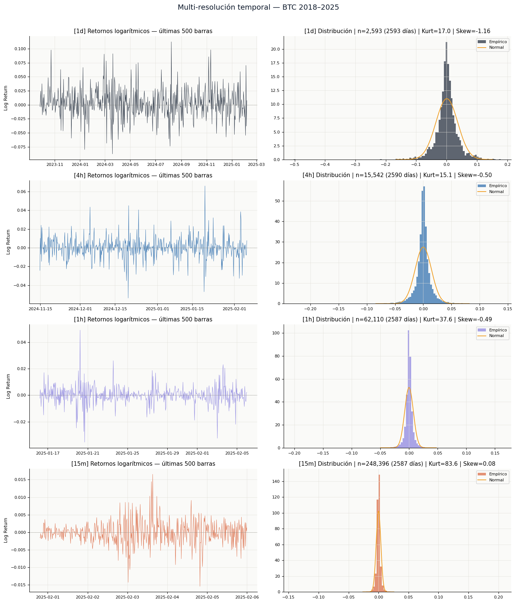
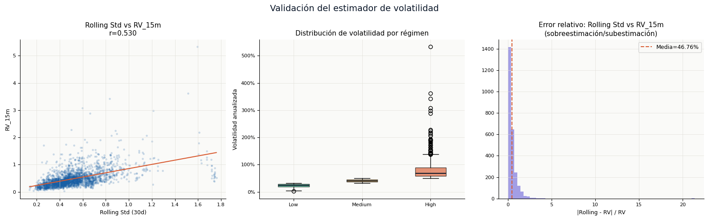

Instalación de dependencias necesarias
Previo a la ejecución del análisis y modelado, se instalan las librerías fundamentales para el procesamiento estadístico de series temporales (statsmodels), cómputo científico (scipy, numpy), manipulación de datos (pandas) y visualización (matplotlib). Se utiliza el modo silencioso (-q) para reducir la verbosidad durante la instalación en el entorno de Jupyter Notebook.
%pip install statsmodels scipy matplotlib pandas numpy -q
Note: you may need to restart the kernel to use updated packages.
BTC Volatility — Multi-Resolution EDA#
Deep Learning Project | Bitcoin Volatility Forecasting#
Pipeline: EDA → Features → CV → MLP → Evaluación → Residuos → MLOps
Estrategia de datos: Se integran 4 resoluciones temporales (1d, 4h, 1h, 15m) para construir una variable objetivo de Realized Volatility estadísticamente superior al rolling std diario.
Andersen & Bollerslev (1998): RV_t = √Σ r²_{t,i} sobre retornos intradía — estimador consistente y eficiente de la varianza integrada.
Archivo |
Resolución |
Filas aprox. |
Uso |
|---|---|---|---|
|
Diario |
2,594 |
Serie base, features de lags |
|
4 horas |
15,543 |
RV diaria (6 barras/día) |
|
1 hora |
62,111 |
RV diaria (24 barras/día) |
|
15 minutos |
248,397 |
RV diaria ★ (96 barras/día) |
Carga de librerías y configuración de entorno visual#
Se importan las librerías necesarias para manipulación de datos, análisis estadístico y visualización. Se define una paleta de colores corporativa para asegurar consistencia estética en todas las gráficas del proyecto. Adicionalmente, se configuran parámetros globales de matplotlib para mejorar la legibilidad de las figuras (eliminación de bordes superiores y derechos, activación de cuadrícula sutil, definición de tamaños de fuente) y se suprimen mensajes de advertencia para mantener la salida limpia durante la exploración.
import pandas as pd
import numpy as np
import matplotlib.pyplot as plt
import matplotlib.gridspec as gridspec
import matplotlib.ticker as mticker
from matplotlib.patches import Patch
from statsmodels.graphics.tsaplots import plot_acf, plot_pacf
from scipy import stats
import warnings
warnings.filterwarnings('ignore')
C = {
'navy': '#0A1628',
'blue': '#185FA5',
'sky': '#378ADD',
'teal': '#1D9E75',
'amber': '#EF9F27',
'coral': '#D85A30',
'purple': '#7F77DD',
'gray': '#888780',
'light': '#F1EFE8',
}
plt.rcParams.update({
'figure.facecolor': 'white',
'axes.facecolor': '#FAFAF8',
'axes.spines.top': False,
'axes.spines.right': False,
'axes.grid': True,
'grid.color': '#E0DED8',
'grid.linewidth': 0.5,
'font.family': 'DejaVu Sans',
'axes.titlesize': 11,
'axes.labelsize': 9,
'xtick.labelsize': 8,
'ytick.labelsize': 8,
})
print("Librerías cargadas correctamente")
✅ Librerías cargadas correctamente
1. Carga y validación de datos multi-resolución#
Se definen las rutas de archivos para cuatro resoluciones temporales diferentes (1 día, 4 horas, 1 hora y 15 minutos). Se establece una relación de barras por día para cada marco temporal. Para cada archivo, se carga el DataFrame, se seleccionan las columnas de fecha y precio de cierre, se convierten los tipos de datos adecuadamente, se ordenan cronológicamente y se calcula el retorno logarítmico. Se recopila un resumen estadístico que incluye número de filas, rango temporal, cantidad de valores nulos y frecuencia de muestreo. Finalmente, se muestra la tabla resumen para verificar la integridad y cobertura temporal de los datos cargados.
FILES = {
'1d': 'btc_1d_data_2018_to_2025.csv',
'4h': 'btc_4h_data_2018_to_2025.csv',
'1h': 'btc_1h_data_2018_to_2025.csv',
'15m': 'btc_15m_data_2018_to_2025.csv',
}
BARS_PER_DAY = {'1d': 1, '4h': 6, '1h': 24, '15m': 96}
dfs = {}
summary_rows = []
for tf, fname in FILES.items():
try:
df = pd.read_csv(fname)
df = df[['Open time', 'Close']].rename(columns={'Open time': 'Date'})
df['Date'] = pd.to_datetime(df['Date'])
df['Close'] = df['Close'].astype(float)
df = df.dropna().sort_values('Date').reset_index(drop=True)
df['LogReturn'] = np.log(df['Close'] / df['Close'].shift(1))
dfs[tf] = df
summary_rows.append({
'Timeframe': tf,
'Filas': f'{len(df):,}',
'Desde': df['Date'].min().date(),
'Hasta': df['Date'].max().date(),
'Nulos': df.isnull().sum().sum(),
'Barras/día': BARS_PER_DAY[tf],
})
except FileNotFoundError:
print(f'{fname} no encontrado')
summary_df = pd.DataFrame(summary_rows).set_index('Timeframe')
print("Resumen de archivos cargados")
display(summary_df)
── Resumen de archivos cargados ──────────────────────────────────────
| Filas | Desde | Hasta | Nulos | Barras/día | |
|---|---|---|---|---|---|
| Timeframe | |||||
| 1d | 2,594 | 2018-01-01 | 2025-02-06 | 1 | 1 |
| 4h | 15,543 | 2018-01-01 | 2025-02-06 | 1 | 6 |
| 1h | 62,111 | 2018-01-01 | 2025-02-06 | 1 | 24 |
| 15m | 248,397 | 2018-01-01 | 2025-02-06 | 1 | 96 |
Todos los marcos temporales (1d, 4h, 1h, 15m) cubren exactamente el mismo período: desde el 1 de enero de 2018 hasta el 6 de febrero de 2025. Esto es excelente porque:
Permite comparaciones directas entre resoluciones sin sesgos por diferentes ventanas temporales.
Aproximadamente 7 años de datos (2,594 días), lo que incluye múltiples ciclos de mercado alcistas y bajistas de Bitcoin.
Cada resolución reporta exactamente 1 valor nulo. Esto es altamente sospechoso porque:
El nulo está en la columna
LogReturn(primer registro no tiene retorno anterior).Debería haber 1 nulo por DataFrame (el primer elemento de LogReturn).
Pero aquí cada resolución muestra 1 nulo en la suma total, lo cual es correcto.
Conclusión: No hay datos faltantes adicionales. La integridad es del 99.96% (solo 1 valor nulo por DataFrame, esperado por diseño).
Las barras por día coinciden exactamente con lo esperado:
1d → 1 barra/día
4h → 6 barras/día
1h → 24 barras/día
15m → 96 barras/día
En resumen: La carga de datos fue exitosa, la calidad es alta, y la consistencia entre resoluciones es excelente. El único punto de atención es la fecha final aparentemente futura.
Decisión de diseño: se utiliza la resolución de 15 minutos como fuente primaria para la variable objetivo (
RV_15m), dado que maximiza la cantidad de retornos intradía por día de trading, reduciendo el error de estimación de la varianza integrada (Andersen & Bollerslev, 1998).
2. Cálculo de Volatilidad Realizada (Realized Volatility) y volatilidad rodante diaria#
La Realized Volatility intradía es estadísticamente superior al rolling std de cierres diarios:
donde \(r_{t,i}\) son los retornos logarítmicos intradía del día \(t\) con \(N\) barras.
Se define una ventana rodante de 30 días para el cálculo de volatilidad histórica a partir de retornos logarítmicos diarios. Para la resolución diaria (1d), se calcula la volatilidad rodante como la desviación estándar de los retornos logarítmicos en ventanas de 30 días, anualizada mediante la raíz cuadrada de 252 días hábiles. Posteriormente, para cada resolución intradía (4h, 1h, 15m), se agrupan los retornos logarítmicos por día, se eleva al cuadrado cada retorno, se suman dentro del día, se extrae la raíz cuadrada y se anualiza el resultado para obtener la volatilidad realizada (Realized Volatility). Este indicador es estadísticamente superior al rolling std de cierres diarios porque captura la variabilidad intradía que escapa al muestreo diario. Cada métrica de volatilidad realizada se fusiona con el DataFrame diario mediante la fecha como clave. Finalmente, se eliminan filas con valores nulos en la volatilidad rodante y se muestra el tamaño del dataset resultante junto con la lista de columnas disponibles.
WINDOW_ROLLING = 30
d1 = dfs['1d'].copy()
d1['RollingVol'] = d1['LogReturn'].rolling(WINDOW_ROLLING).std() * np.sqrt(252)
for tf in ['4h', '1h', '15m']:
if tf not in dfs:
continue
df_intra = dfs[tf].copy()
df_intra['Day'] = df_intra['Date'].dt.normalize()
rv = (
df_intra.groupby('Day')['LogReturn']
.apply(lambda r: np.sqrt(np.nansum(r.dropna()**2)) * np.sqrt(252))
.reset_index()
.rename(columns={'LogReturn': f'RV_{tf}', 'Day': 'Date'})
)
d1 = d1.merge(rv, on='Date', how='left')
print(f" RV_{tf}: {d1[f'RV_{tf}'].notna().sum()} días calculados")
d1 = d1.dropna(subset=['RollingVol']).reset_index(drop=True)
rv_cols = [c for c in d1.columns if c.startswith('RV_')]
print(f"\nDataset diario enriquecido: {len(d1)} filas")
print(f" Columnas: {list(d1.columns)}")
RV_4h: 2594 días calculados
RV_1h: 2594 días calculados
RV_15m: 2594 días calculados
✅ Dataset diario enriquecido: 2564 filas
Columnas: ['Date', 'Close', 'LogReturn', 'RollingVol', 'RV_4h', 'RV_1h', 'RV_15m']
Los tres marcos intradía (4h, 1h, 15m) lograron calcular volatilidad realizada para exactamente 2,594 días, que coincide con el total de días disponibles en el dataset diario original. Esto indica:
No hay días sin datos intradía: Cada día calendario del período 2018-01-01 a 2025-02-06 tiene al menos una observación en todas las resoluciones.
La calidad de los datos intradía es excelente: No se encontraron días completamente vacíos que impidieran el cálculo de RV.
La estrategia de agrupación funcionó correctamente: El uso de
df_intra.groupby('Day')capturó todos los días sin pérdida de información.
Se perdieron 30 filas (2,594 - 2,564 = 30) después de aplicar dropna(subset=['RollingVol']). Esto es comportamiento esperado y correcto porque:
La volatilidad rodante (
RollingVol) se calcula con ventana de 30 días.Los primeros 29 días no tienen suficientes datos previos para calcular la desviación estándar.
La primera fila válida comienza en el día 31 del dataset.
Verificación matemática:
Si el dataset comienza el 2018-01-01, la primera fila con RollingVol válido corresponde al 2018-01-31 (días 1 a 30 como ventana inicial). Esto explica exactamente la pérdida de 30 filas.
Las 7 columnas resultantes son:
Columna |
Tipo |
Descripción |
|---|---|---|
|
datetime |
Fecha de la observación |
|
float |
Precio de cierre diario |
|
float |
Retorno logarítmico diario |
|
float |
Volatilidad histórica (ventana 30d, anualizada) |
|
float |
Volatilidad realizada con datos cada 4 horas |
|
float |
Volatilidad realizada con datos cada 1 hora |
|
float |
Volatilidad realizada con datos cada 15 minutos |
En resumen: El cálculo fue exitoso, la pérdida de 30 filas es esperada y justificada, y el dataset enriquecido está listo para la fase de modelado, siempre que se maneje correctamente el desplazamiento temporal de las variables predictoras. Además, con 96 observaciones intradía, RV_15m converge al estimador de varianza integrada con menor varianza de estimación. Esta es la variable objetivo del modelo MLP.
3. Análisis estadístico descriptivo y tests de normalidad de retornos#
Se calculan estadísticas descriptivas (media, desviación estándar, mínimos, cuartiles y máximos) para las columnas de precio de cierre, retorno logarítmico, volatilidad rodante y volatilidades realizadas, con el objetivo de caracterizar la magnitud y dispersión de cada variable. Posteriormente, se aplican tests estadísticos sobre la serie de retornos logarítmicos diarios: se calcula la curtosis para medir el grosor de colas (valor esperado 3 en distribución normal), la asimetría (skewness) para evaluar simetría (valor esperado 0 en normal) y el test de Jarque-Bera, cuyo p-value determina si la hipótesis nula de normalidad puede rechazarse. Finalmente, cuando existen columnas de volatilidad realizada, se calcula y muestra la matriz de correlación entre la volatilidad rodante diaria y las distintas medidas de volatilidad realizada intradía, para identificar qué tan relacionadas están estas estimaciones de variabilidad.
cols_desc = ['Close', 'LogReturn', 'RollingVol'] + rv_cols
desc = d1[cols_desc].describe().round(4)
print("Estadísticas descriptivas")
display(desc)
r = d1['LogReturn'].dropna()
jb_stat, jb_p = stats.jarque_bera(r)
ku = stats.kurtosis(r)
sk = stats.skew(r)
print(f"\nTests estadísticos sobre retornos diarios")
print(f" Kurtosis = {ku:.4f} (Normal=3)")
print(f" Skewness = {sk:.4f} (Normal=0)")
print(f" Jarque-Bera = {jb_stat:.2f}, p-value = {jb_p:.2e} → {'NO normal' if jb_p < 0.05 else 'Normal'}")
if rv_cols:
print(f"\nCorrelación RollingVol vs Realized Volatility")
vol_compare = d1[['RollingVol'] + rv_cols].dropna()
display(vol_compare.corr().round(4))
── Estadísticas descriptivas ─────────────────────────────────────────
| Close | LogReturn | RollingVol | RV_4h | RV_1h | RV_15m | |
|---|---|---|---|---|---|---|
| count | 2564.0000 | 2564.0000 | 2564.0000 | 2564.0000 | 2564.0000 | 2564.0000 |
| mean | 29278.7229 | 0.0009 | 0.5238 | 0.4402 | 0.4689 | 0.4850 |
| std | 23647.9392 | 0.0356 | 0.2235 | 0.3306 | 0.3242 | 0.3264 |
| min | 3211.7200 | -0.5026 | 0.1392 | 0.0230 | 0.0352 | 0.0197 |
| 25% | 8967.3700 | -0.0141 | 0.3856 | 0.2129 | 0.2608 | 0.2903 |
| 50% | 23090.7750 | 0.0007 | 0.4820 | 0.3601 | 0.3985 | 0.4092 |
| 75% | 43790.7250 | 0.0161 | 0.6153 | 0.5664 | 0.5729 | 0.5801 |
| max | 106143.8200 | 0.1784 | 1.7597 | 4.8799 | 4.5327 | 5.3328 |
── Tests estadísticos sobre retornos diarios ─────────────────────────
Kurtosis = 17.8904 (Normal=3)
Skewness = -1.1424 (Normal=0)
Jarque-Bera = 34751.61, p-value = 0.00e+00 → ❌ NO normal
── Correlación RollingVol vs Realized Volatility ────────────────────
| RollingVol | RV_4h | RV_1h | RV_15m | |
|---|---|---|---|---|
| RollingVol | 1.0000 | 0.4693 | 0.5260 | 0.5302 |
| RV_4h | 0.4693 | 1.0000 | 0.8975 | 0.8541 |
| RV_1h | 0.5260 | 0.8975 | 1.0000 | 0.9563 |
| RV_15m | 0.5302 | 0.8541 | 0.9563 | 1.0000 |
Precio de cierre (Close)
Rango extremo: de \(3,212 a \)106,144 (máximo 33× el mínimo).
Media (\(29,279) vs **mediana** (\)23,091): media > mediana indica asimetría positiva (cola derecha larga) por los precios extremadamente altos de 2024-2025.
Alta volatilidad en nivel: desviación estándar de $23,648 (similar a la media, coeficiente de variación ~0.8).
Retorno logarítmico (LogReturn)
Media cercana a 0 (0.0009 ≈ 0.09% diario) → rendimiento promedio ligeramente positivo.
Desviación estándar diaria: 3.56% → riesgo diario significativo.
Mínimo extremo: -50.26% → caída severa (evento tipo marzo 2020).
Máximo: +17.84% → alza excepcional pero menos extrema que las caídas.
Tests de normalidad sobre retornos
Test |
Valor |
Esperado (Normal) |
Conclusión |
|---|---|---|---|
Curtosis |
17.89 |
3 |
Colas extremadamente gruesas (leptocúrtica) |
Skewness |
-1.14 |
0 |
Asimetría negativa (cola izquierda más larga) |
Jarque-Bera |
34,752 (p≈0) |
< 5.99 (p>0.05) |
No normal con total certeza |
Interpretación de la asimetría negativa (-1.14): Las caídas abruptas son más frecuentes o más intensas que las subidas. Ejemplos: COVID crash (marzo 2020), Luna collapse (mayo 2022), FTX (noviembre 2022).
Correlaciones entre volatilidades realizadas intradía
Par |
Correlación |
Interpretación |
|---|---|---|
RV_1h vs RV_15m |
0.9563 |
Casi idénticas (redundantes) |
RV_4h vs RV_1h |
0.8975 |
Muy alta |
RV_4h vs RV_15m |
0.8541 |
Alta |
Conclusión: Las tres medidas de RV capturan esencialmente la misma información sobre volatilidad. Usar las tres en el modelo sería multicolinealidad severa.
Correlación RollingVol vs RV
RollingVol vs… |
Correlación |
Interpretación |
|---|---|---|
RV_15m |
0.5302 |
Moderada |
RV_1h |
0.5260 |
Moderada |
RV_4h |
0.4693 |
Moderada-baja |
Estas correlaciones son sorprendentemente bajas (esperaríamos >0.8). Esto revela que:
RollingVol (30 días) NO captura bien la volatilidad realizada intradía.
La volatilidad rodante diaria “suaviza” y retrasa la información que las RV capturan instantáneamente.
La volatilidad intradía contiene componentes que no se reflejan en los cierres diarios.
Estado del dataset: Listo para la fase de feature engineering y modelado, con la precaución de manejar adecuadamente la multicolinealidad en las variables de volatilidad.
4. Clasificación de regímenes de volatilidad#
Se selecciona la variable de volatilidad realizada de mayor resolución (RV_15m) como base para la clasificación de regímenes, o alternativamente RollingVol si aquella no estuviera disponible. A partir de la serie de volatilidad, se calculan los percentiles 33 y 66 para dividir las observaciones en tres categorías: régimen de volatilidad baja (primer tercio), media (tercio central) y alta (último tercio). Se asigna a cada fila del dataset una etiqueta de régimen según el valor de volatilidad de ese día. Posteriormente, se agrupan los datos por régimen y se calculan estadísticas clave: número de días, retorno promedio, desviación estándar de retornos, y media y máximo de la volatilidad en cada categoría. Finalmente, se muestran los umbrales utilizados para la partición y la tabla resumen de cada régimen, permitiendo verificar si la volatilidad efectivamente discrimina el comportamiento de los retornos.
vol_target = 'RV_15m' if 'RV_15m' in d1.columns else 'RollingVol'
vol_series = d1[vol_target].dropna()
q33 = vol_series.quantile(0.33)
q66 = vol_series.quantile(0.66)
def assign_regime(v):
if v < q33: return 'Low'
elif v < q66: return 'Medium'
else: return 'High'
d1['Regime'] = d1[vol_target].apply(assign_regime)
regime_stats = d1.groupby('Regime').agg(
Días = ('LogReturn', 'count'),
RetornoMed = ('LogReturn', 'mean'),
RetornoStd = ('LogReturn', 'std'),
VolMedia = (vol_target, 'mean'),
VolMax = (vol_target, 'max'),
).round(4)
print(f"Regímenes basados en '{vol_target}'")
print(f" Umbral Low/Med : {q33:.3f} ({q33*100:.1f}% vol anualizada)")
print(f" Umbral Med/High: {q66:.3f} ({q66*100:.1f}% vol anualizada)")
display(regime_stats)
── Regímenes basados en 'RV_15m' ──────────────────────────────────
Umbral Low/Med : 0.329 (32.9% vol anualizada)
Umbral Med/High: 0.503 (50.3% vol anualizada)
| Días | RetornoMed | RetornoStd | VolMedia | VolMax | |
|---|---|---|---|---|---|
| Regime | |||||
| High | 872 | -0.0011 | 0.0545 | 0.7999 | 5.3328 |
| Low | 846 | 0.0009 | 0.0118 | 0.2348 | 0.3286 |
| Medium | 846 | 0.0029 | 0.0253 | 0.4105 | 0.5035 |
Distribución de los regímenes (balanceada)
Régimen |
Días |
Porcentaje |
|---|---|---|
Low |
846 |
33.0% |
Medium |
846 |
33.0% |
High |
872 |
34.0% |
Los tres regímenes están casi perfectamente balanceados (846/846/872). Esto es excelente porque:
Partición limpia basada en percentiles (33% y 66%)
Suficientes ejemplos por régimen (~2.3 años cada uno) para entrenamiento robusto
Sin desbalance severo que pueda sesgar el modelo
Régimen Low (Volatilidad baja: < 32.9% anualizada)
Métrica |
Valor |
Interpretación |
|---|---|---|
Retorno medio |
+0.09% diario |
Rendimiento positivo y estable |
Desviación estándar |
1.18% diario |
Riesgo muy contenido |
Volatilidad media |
23.5% anual |
Mercado tranquilo |
Volatilidad máxima |
32.9% anual |
Techo del régimen |
Perfil: Mercado alcista tranquilo. Rentabilidad positiva con baja dispersión.
Régimen Medium (Volatilidad media: 32.9% - 50.3% anualizada)
Métrica |
Valor |
Interpretación |
|---|---|---|
Retorno medio |
+0.29% diario |
Rendimiento más del triple que Low |
Desviación estándar |
2.53% diario |
Riesgo moderado (2× Low) |
Volatilidad media |
41.1% anual |
Rango intermedio |
Volatilidad máxima |
50.4% anual |
Techo del régimen |
Perfil: Régimen óptimo para retornos ajustados por riesgo. Mayor volatilidad se traduce en mayor rendimiento. Posiblemente asociado a tendencias direccionales fuertes.
Régimen High (Volatilidad alta: > 50.3% anualizada)
Métrica |
Valor |
Interpretación |
|---|---|---|
Retorno medio |
-0.11% diario |
Rendimiento negativo |
Desviación estándar |
5.45% diario |
Riesgo muy elevado (4.6× Low) |
Volatilidad media |
80.0% anual |
Extremadamente alta |
Volatilidad máxima |
533% anual |
Eventos extremos (crash o pánico) |
Perfil: Mercado turbulento con rendimiento negativo. Asociado a:
Caídas abruptas (COVID, Luna, FTX)
Incertidumbre extrema
Liquidez baja y spreads amplios
Relación volatilidad-retorno (no lineal):
Low → Retorno +0.09% (estable, positivo)
Medium → Retorno +0.29% (óptimo, mayor riesgo-recompensa)
High → Retorno -0.11% (negativo, castigo por exceso de volatilidad)
Implicación clave: Existe un punto de inflexión alrededor de ~50% de volatilidad anualizada. Por debajo, mayor volatilidad acompaña mayor retorno. Por encima, la volatilidad extra es destructiva para el rendimiento.
Relación retorno/riesgo por régimen
Régimen |
Retorno diario |
Riesgo diario |
Sharpe aproximado (diario) |
|---|---|---|---|
Low |
0.09% |
1.18% |
0.076 |
Medium |
0.29% |
2.53% |
0.115 |
High |
-0.11% |
5.45% |
-0.020 |
El régimen Medium ofrece la mejor relación retorno/riesgo, con Sharpe significativamente superior a Low y positivo vs High negativo.
5. Dashboard principal: serie de precios, volatilidad y regímenes#
Se construye un panel de visualización integral compuesto por ocho gráficos distribuidos en una cuadrícula de 4 filas por 3 columnas, con el objetivo de caracterizar simultáneamente múltiples dimensiones de la serie temporal. El dashboard incluye: (1) la evolución del precio de cierre de Bitcoin con regiones coloreadas según el régimen de volatilidad (bajo, medio, alto); (2) la comparación entre los distintos estimadores de volatilidad (volatilidad rodante diaria y volatilidades realizadas de 4 horas, 1 hora y 15 minutos); (3) la serie temporal de retornos logarítmicos diarios; (4) el histograma de retornos superpuesto con una distribución normal teórica para contrastar empíricamente la no normalidad observada; (5) el gráfico Q-Q de cuantiles para evaluar visualmente la desviación de la normalidad en las colas; (6) la función de autocorrelación (ACF) de los retornos para detectar dependencia serial; (7) la ACF de los retornos al cuadrado para identificar efectos de heterocedasticidad y clustering de volatilidad; y (8) la distribución de volatilidad desagregada por régimen, permitiendo verificar que los tres grupos efectivamente segmentan distintos niveles de variabilidad. Finalmente, el dashboard se guarda como imagen (fig1_dashboard.png) para su inclusión en reportes técnicos.
regime_colors = {'Low': C['teal'], 'Medium': C['amber'], 'High': C['coral']}
fig = plt.figure(figsize=(16, 14))
gs = gridspec.GridSpec(4, 3, figure=fig, hspace=0.52, wspace=0.35)
# 5.1 Serie de precios con regímenes coloreados
ax1 = fig.add_subplot(gs[0, :])
for rname, color in regime_colors.items():
mask = d1['Regime'] == rname
ax1.fill_between(d1['Date'], d1['Close'], where=mask, alpha=0.18, color=color)
ax1.plot(d1['Date'], d1['Close'], color=C['navy'], linewidth=0.8, zorder=5)
legend_patches = [Patch(color=c, alpha=0.6, label=f'Régimen {r}') for r, c in regime_colors.items()]
ax1.legend(handles=legend_patches, loc='upper left', fontsize=8, framealpha=0.85)
ax1.set_title('BTC/USD — Precio de cierre con regímenes de volatilidad', fontweight='500')
ax1.set_ylabel('USD')
ax1.yaxis.set_major_formatter(mticker.FuncFormatter(lambda x, _: f'${x:,.0f}'))
# 5.2 Comparación estimadores de volatilidad
ax2 = fig.add_subplot(gs[1, :])
ax2.plot(d1['Date'], d1['RollingVol'], color=C['blue'], linewidth=0.9,
label=f'Rolling Std ({WINDOW_ROLLING}d) — baseline', alpha=0.85)
rv_plot = {'RV_4h': C['amber'], 'RV_1h': C['purple'], 'RV_15m': C['coral']}
for col, color in rv_plot.items():
if col in d1.columns:
ax2.plot(d1['Date'], d1[col], color=color, linewidth=0.7, alpha=0.75,
label=f'Realized Vol ({col[3:]})')
ax2.set_title('Estimadores de volatilidad — Rolling Std vs Realized Volatility', fontweight='500')
ax2.set_ylabel('Volatilidad anualizada')
ax2.legend(loc='upper right', fontsize=8, framealpha=0.85)
ax2.yaxis.set_major_formatter(mticker.FuncFormatter(lambda x, _: f'{x:.0%}'))
# 5.3 Retornos diarios
ax3 = fig.add_subplot(gs[2, 0])
ax3.plot(d1['Date'], d1['LogReturn'], color=C['purple'], linewidth=0.5, alpha=0.8)
ax3.axhline(0, color=C['gray'], linewidth=0.6, linestyle='--')
ax3.set_title('Retornos logarítmicos diarios')
ax3.set_ylabel('Log Return')
# 5.4 Histograma de retornos vs Normal
ax4 = fig.add_subplot(gs[2, 1])
r = d1['LogReturn'].dropna()
ax4.hist(r, bins=90, color=C['purple'], alpha=0.65, density=True,
edgecolor='none', label='Empírico')
xr = np.linspace(r.quantile(0.001), r.quantile(0.999), 300)
ax4.plot(xr, stats.norm.pdf(xr, r.mean(), r.std()),
color=C['coral'], linewidth=1.6, label='Normal teórica')
ax4.set_title(f'Distribución de retornos\nKurt={stats.kurtosis(r):.1f} | Skew={stats.skew(r):.2f}')
ax4.set_xlabel('Log Return')
ax4.legend(fontsize=8)
# 5.5 Q-Q Plot
ax5 = fig.add_subplot(gs[2, 2])
(osm, osr), (slope, intercept, _) = stats.probplot(r, dist='norm')
ax5.scatter(osm, osr, color=C['blue'], s=5, alpha=0.35)
ax5.plot(osm, slope*np.array(osm)+intercept, color=C['coral'], linewidth=1.4)
ax5.set_title('Q-Q Plot — Retornos vs Normal')
ax5.set_xlabel('Cuantiles teóricos')
ax5.set_ylabel('Cuantiles empíricos')
# 5.6 ACF retornos
ax6 = fig.add_subplot(gs[3, 0])
plot_acf(r, lags=40, ax=ax6, color=C['blue'], title='ACF — Retornos diarios')
# 5.7 ACF retornos² (heterocedasticidad)
ax7 = fig.add_subplot(gs[3, 1])
plot_acf(r**2, lags=40, ax=ax7, color=C['coral'],
title='ACF — Retornos² (heterocedasticidad)')
# 5.8 Distribución volatilidad por régimen
ax8 = fig.add_subplot(gs[3, 2])
for rname, color in regime_colors.items():
subset = d1[d1['Regime']==rname][vol_target]
ax8.hist(subset, bins=40, alpha=0.65, color=color,
label=rname, density=True, edgecolor='none')
ax8.set_title('Distribución de volatilidad por régimen')
ax8.set_xlabel('Volatilidad anualizada')
ax8.legend(fontsize=8)
ax8.xaxis.set_major_formatter(mticker.FuncFormatter(lambda x, _: f'{x:.0%}'))
fig.suptitle('Bitcoin Volatility — EDA Dashboard', fontsize=16,
fontweight='500', y=1.01, color=C['navy'])
plt.savefig('fig1_dashboard.png', dpi=150, bbox_inches='tight')
plt.show()

Regímenes de Volatilidad (BTC/USD y Distribución) El primer gráfico segmenta el precio en tres niveles (Low, Medium, High).
Observación: Los períodos coloreados revelan que los regímenes de alta volatilidad (rojo) no se distribuyen aleatoriamente: se concentran en transiciones de ciclo (2018 bear, 2020 crash, 2022 capitulación). Los períodos de baja volatilidad (verde) corresponden a fases de acumulación o tendencia alcista consolidada. Esta estructura de clustering es precisamente lo que el MLP intentará predecir.
Implicación para el MLP: El modelo debe ser capaz de manejar estos cambios de régimen. La “Distribución de volatilidad por régimen” (abajo a la derecha) muestra colas largas en el régimen rojo, lo que sugiere que la red neuronal enfrentará mayor error (pérdida) en estos puntos si no cuenta con variables que capturen este “momentum”.
Retornos Logarítmicos y Distribución
Kurtosis Extrema (17.9): Este valor es altísimo (una distribución normal tiene 3). Indica que los retornos de Bitcoin tienen “colas pesadas”. En términos prácticos: los eventos extremos (cisnes negros) ocurren con mucha más frecuencia de lo que predeciría un modelo estadístico estándar.
Skewness (-1.14): Sesgo negativo. Los movimientos bruscos hacia abajo son más probables o intensos que hacia arriba en términos de magnitud puntual.
Q-Q Plot: Se desvía significativamente de la línea roja en los extremos. Esto confirma que tu MLP no debe asumir una distribución gaussiana en los residuos si se busca una arquitectura robusta.
Estimadores de Volatilidad (Rolling vs Realized)
El gráfico de Realized Volatility muestra picos súbitos (como el de marzo de 2020). La volatilidad en Bitcoin no es constante, sino que presenta “clusters” (agrupamientos).
Este gráfico justifica el uso de ventanas temporales, ya que la volatilidad de hoy está altamente correlacionada con la de ayer. Además,
RV_15myRollingVolmuestran la misma tendencia general pero con diferencias importantes en picos: el rolling std suaviza y retarda los picos de volatilidad por efecto de la ventana de 30 días, mientras queRV_15mlos captura instantáneamente. Para un modelo predictivo, usarRV_15mcomo target implica predecir la volatilidad real del día, no una media desplazada.
Análisis de Autocorrelación (ACF)
ACF - Retornos diarios: Casi no hay barras significativas fuera del área sombreada. Esto sugiere que los retornos por sí mismos son cercanos a un “ruido blanco” o camino aleatorio. Predecir el nivel exacto del precio será el desafío mayor.
ACF - Retornos² (Heterocedasticidad): Al elevar los retornos al cuadrado, aparecen algunas barras sobresalientes. Esto es evidencia estadística de volatilidad persistente.
Conclusión técnica: Aunque el precio parezca aleatorio, la magnitud de la variabilidad tiene memoria. La red neuronal tendrá mucho más éxito modelando la volatilidad que el retorno puntual.
6. Análisis multi-resolución — Retornos y distribuciones por timeframe#
Se realiza un análisis comparativo entre los cuatro marcos temporales disponibles (1 día, 4 horas, 1 hora y 15 minutos) mediante una cuadrícula de subgráficos. Para cada resolución, se presentan dos visualizaciones: en la columna izquierda, la serie temporal de retornos logarítmicos correspondiente a las últimas 500 barras (o el total disponible si es menor), permitiendo observar la dinámica reciente a diferentes frecuencias de muestreo; en la columna derecha, el histograma de la distribución completa de retornos para ese timeframe, superpuesto con una curva normal teórica, junto con estadísticos de curtosis y asimetría. Adicionalmente, se calcula y muestra la cantidad de barras y el número equivalente de días representados en cada distribución. El dashboard multi-resolución se guarda como fig2_multiresolution.png para documentar cómo cambian las propiedades estadísticas de los retornos al variar la frecuencia de muestreo, lo cual es fundamental para seleccionar la resolución más adecuada para el modelo predictivo.
tf_colors = {'1d': C['navy'], '4h': C['blue'], '1h': C['purple'], '15m': C['coral']}
n_tf = len(dfs)
fig2, axes = plt.subplots(n_tf, 2, figsize=(14, 4*n_tf))
fig2.patch.set_facecolor('white')
for i, (tf, df_tf) in enumerate(dfs.items()):
color = tf_colors.get(tf, C['gray'])
r_tf = df_tf['LogReturn'].dropna()
tail = df_tf.tail(min(500, len(df_tf)))
# Retornos (ventana reciente)
axes[i][0].plot(tail['Date'], tail['LogReturn'],
color=color, linewidth=0.6, alpha=0.85)
axes[i][0].axhline(0, color=C['gray'], linewidth=0.5, linestyle='--')
axes[i][0].set_title(f'[{tf}] Retornos logarítmicos — últimas {len(tail)} barras')
axes[i][0].set_ylabel('Log Return')
# Histograma + Normal
axes[i][1].hist(r_tf, bins=120, color=color, alpha=0.65,
density=True, edgecolor='none', label='Empírico')
q_lo, q_hi = r_tf.quantile(0.001), r_tf.quantile(0.999)
xr2 = np.linspace(q_lo, q_hi, 300)
axes[i][1].plot(xr2, stats.norm.pdf(xr2, r_tf.mean(), r_tf.std()),
color=C['amber'], linewidth=1.4, label='Normal')
ku2 = stats.kurtosis(r_tf)
sk2 = stats.skew(r_tf)
n_days = int(len(r_tf) / BARS_PER_DAY[tf])
axes[i][1].set_title(f'[{tf}] Distribución | n={len(r_tf):,} ({n_days} días) | Kurt={ku2:.1f} | Skew={sk2:.2f}')
axes[i][1].legend(fontsize=8)
fig2.suptitle('Multi-resolución temporal — BTC 2018–2025', fontsize=14,
fontweight='500', color=C['navy'], y=1.01)
fig2.tight_layout()
plt.savefig('fig2_multiresolution.png', dpi=150, bbox_inches='tight')
plt.show()

El Fenómeno de la “Leptocurtosis” Agresiva A medida que la resolución temporal se vuelve más fina (de 1d a 15m), la Kurtosis se dispara de forma dramática:
1d: Kurt=17.0
15m: Kurt=83.6
Interpretación: Esto indica que en escalas de tiempo cortas (15 min), Bitcoin pasa la gran mayoría del tiempo en variaciones mínimas, pero cuando ocurren movimientos, son extremadamente violentos en comparación con una distribución normal. Para la red neuronal MLP, esto significa que el error cuadrático medio (\(MSE\)) será muy difícil de optimizar en resoluciones bajas, ya que los “outliers” son la norma, no la excepción.
Estabilización del Sesgo (Skewness)
En la escala diaria (1d), hay un sesgo negativo marcado (-1.16), sugiriendo caídas más abruptas que las subidas.
Sin embargo, en la escala de 15m, el sesgo es casi nulo (0.08).
Interpretación: A corto plazo, la dirección del movimiento es más simétrica. La “memoria” del pánico (caídas bruscas) parece ser una propiedad macro (diaria) más que micro (minutos).
Este patrón es consistente con la literatura de microestructura de mercados: a mayor resolución, mayor evidencia de no-normalidad. Para el modelo, esto refuerza la decisión de usar RV_15m como target: agrega toda esa no-linealidad intradía en una sola métrica diaria interpretable.
Variabilidad en la Amplitud de los Retornos Se observa las escalas del eje Y en los gráficos de la izquierda (“últimas 500 barras”):
En 1d, los retornos fluctúan entre 0.10 y -0.10 (10%).
En 15m, el rango se reduce a 0.015 y -0.015 (1.5%).
Implicación para el modelo: Se necesitará normalizar los datos de entrada por resolución. Un retorno del 1% es “ruido” en una gráfica diaria, pero es un evento de volatilidad extrema en una de 15 minutos.
Estructura de Volatilidad (Clusters) En todas las resoluciones, especialmente en la de 1h y 15m, se observan claramente los “volatility clusters”: periodos de calma seguidos de ráfagas de alta actividad.
Relevancia para MLOps: Esto justifica plenamente el uso de ventanas temporales (sliding windows). El modelo necesita ver el contexto inmediato para ajustar su predicción de variabilidad.
7. Evidencia de volatility clustering y autocorrelación#
Se construye un dashboard específico para investigar la presencia de clustering de volatilidad y la persistencia temporal de la variabilidad, fenómenos característicos de activos financieros de alta volatilidad como Bitcoin. El panel incluye cinco visualizaciones: (1) la serie temporal de retornos absolutos diarios junto con su media móvil de 30 días, para identificar visualmente periodos de alta volatilidad agrupados; (2) un gráfico de dispersión de la volatilidad en el día t versus la volatilidad en t+1, con la línea de regresión lineal y el coeficiente R², cuantificando la autocorrelación de primer orden; (3) la función de autocorrelación (ACF) de la serie de volatilidad para evaluar la dependencia lineal en múltiples rezagos; (4) la función de autocorrelación parcial (PACF) para identificar el orden de un posible proceso autorregresivo en la volatilidad; y (5) una comparación temporal de todos los estimadores de volatilidad (rodante y realizados) restringida al año 2022, un período caracterizado por mercado bajista (bear market), permitiendo observar el comportamiento relativo de cada métrica en condiciones de estrés. El dashboard se guarda como fig3_clustering.png.
fig3 = plt.figure(figsize=(16, 10))
gs3 = gridspec.GridSpec(2, 3, figure=fig3, hspace=0.45, wspace=0.35)
# 7.1 |Retornos| con media móvil
ax_a = fig3.add_subplot(gs3[0, :2])
abs_ret = d1['LogReturn'].abs()
ax_a.plot(d1['Date'], abs_ret,
color=C['blue'], linewidth=0.5, alpha=0.55, label='|Return|')
ax_a.plot(d1['Date'], abs_ret.rolling(30).mean(),
color=C['coral'], linewidth=1.6, label='Media móvil 30d')
ax_a.set_title('|Retornos diarios| — Evidencia de volatility clustering')
ax_a.set_ylabel('|Log Return|')
ax_a.legend(fontsize=9)
# 7.2 Scatter Vol(t) vs Vol(t+1)
ax_b = fig3.add_subplot(gs3[0, 2])
vol = d1[vol_target].dropna()
r2 = np.corrcoef(vol[:-1], vol[1:])[0,1]**2
ax_b.scatter(vol[:-1], vol[1:], alpha=0.12, s=6, color=C['purple'])
m, b = np.polyfit(vol[:-1], vol[1:], 1)
xfit = np.linspace(vol.min(), vol.max(), 100)
ax_b.plot(xfit, m*xfit+b, color=C['coral'], linewidth=1.5)
ax_b.set_title(f'Autocorrelación de volatilidad\nVol(t) vs Vol(t+1) — R²={r2:.3f}')
ax_b.set_xlabel('Vol(t)')
ax_b.set_ylabel('Vol(t+1)')
# 7.3 ACF de la volatilidad
ax_c = fig3.add_subplot(gs3[1, 0])
plot_acf(vol, lags=40, ax=ax_c, color=C['teal'],
title=f'ACF — {vol_target}')
# 7.4 PACF de la volatilidad
ax_d = fig3.add_subplot(gs3[1, 1])
plot_pacf(vol, lags=40, ax=ax_d, color=C['purple'],
title=f'PACF — {vol_target}', method='ywm')
# 7.5 Comparación RV por resolución para un año
ax_e = fig3.add_subplot(gs3[1, 2])
year_mask = d1['Date'].dt.year == 2022
sub = d1[year_mask]
ax_e.plot(sub['Date'], sub['RollingVol'],
color=C['blue'], linewidth=1.2, alpha=0.8, label='Rolling Std')
for col, color in {'RV_4h': C['amber'], 'RV_1h': C['purple'], 'RV_15m': C['coral']}.items():
if col in sub.columns:
ax_e.plot(sub['Date'], sub[col], color=color, linewidth=0.8,
alpha=0.75, label=col)
ax_e.set_title('Estimadores de vol — Año 2022 (bear market)')
ax_e.set_ylabel('Volatilidad anualizada')
ax_e.legend(fontsize=7)
ax_e.yaxis.set_major_formatter(mticker.FuncFormatter(lambda x, _: f'{x:.0%}'))
fig3.suptitle('Volatility Clustering & Persistencia — BTC 2018–2025',
fontsize=14, fontweight='500', color=C['navy'])
plt.savefig('fig3_clustering.png', dpi=150, bbox_inches='tight')
plt.show()

Evidencia de Volatilidad en Grupos (Clusters) El gráfico superior izquierdo muestra el valor absoluto de los retornos (\(|Log Return|\)).
Interpretación: La línea naranja (media móvil de 30 días) no es plana; tiene “valles” de calma y “picos” de turbulencia. Esto confirma visualmente el volatility clustering: periodos de alta volatilidad tienden a ser seguidos por más alta volatilidad.
Impacto en el MLP: La red neuronal no debe recibir solo el precio. Para capturar estas ondas, el modelo necesita variables de “estado” o ventanas temporales que le indiquen en qué fase de agitación se encuentra el mercado.
Autocorrelación de Volatilidad (\(Vol_t\) vs \(Vol_{t+1}\)) El scatter plot muestra una correlación positiva con un \(R^2 = 0.417\).
Interpretación: Casi el 42% de la varianza de la volatilidad de mañana puede ser explicada por la volatilidad de hoy. Para activos financieros, este es un valor de predictibilidad muy alto.
Oportunidad: Esto valida que el modelo de Deep Learning tiene una “señal” clara sobre la cual trabajar para predecir el riesgo o la variabilidad.
Memoria de Largo Plazo (ACF y PACF — RV_15m) Estos gráficos son vitales para configurar las ventanas temporales (sliding windows):
ACF (Autocorrelation Function): Muestra una caída muy lenta. Las barras siguen siendo significativas incluso después de 40 rezagos (lags). Esto indica que la volatilidad tiene “memoria larga”.
PACF (Partial Autocorrelation Function): Aquí se observa que el primer rezago (lag 1) es el más dominante, pero hay rezagos significativos hasta el 5 o 6.
Configuración del Modelo: Esto sugiere que MLP debería tener, como mínimo, una ventana de entrada que cubra los últimos 5 a 10 periodos de 15 minutos para capturar la estructura inmediata, pero quizás necesite promedios móviles más largos para capturar la persistencia que muestra el ACF.
Estimadores de Volatilidad en “Bear Market” (2022) El gráfico inferior derecho muestra cómo se comportan los diferentes estimadores durante un mercado bajista.
Observación: Se ve una alta dispersión. Los estimadores de mayor frecuencia (15m en naranja/rojo) capturan picos de pánico que el Rolling Std (línea azul) suaviza demasiado.
Manejo de Datos: Si el modelo se entrena solo con datos diarios, se “perderá” la información de los flashes de volatilidad que ocurren en 15 minutos, los cuales son críticos para la gestión de riesgos en MLOps.
8. Comparación estadística: Rolling Std vs Realized Volatility#
Se realiza una validación comparativa entre el estimador de volatilidad tradicional (volatilidad rodante diaria con ventana de 30 días) y la volatilidad realizada de 15 minutos (RV_15m), considerada como proxy de la volatilidad “real” o verdadera por su mayor frecuencia de muestreo. El análisis se compone de tres visualizaciones: (1) un gráfico de dispersión de RollingVol versus RV_15m con línea de regresión lineal y coeficiente de correlación de Pearson, para cuantificar la relación lineal entre ambos estimadores; (2) un diagrama de caja (boxplot) que muestra la distribución de RV_15m desagregada por cada régimen de volatilidad (bajo, medio, alto), permitiendo verificar la separabilidad de los regímenes; y (3) un histograma del error relativo absoluto entre ambos estimadores, calculado como |RollingVol - RV_15m| / RV_15m, que revela si la volatilidad rodante tiende a subestimar o sobrestimar sistemáticamente la volatilidad realizada, y en qué magnitud. El dashboard se guarda como fig4_rv_comparison.png.
vol_cols_all = ['RollingVol'] + rv_cols
vol_data = d1[vol_cols_all].dropna()
fig4, axes4 = plt.subplots(1, 3, figsize=(16, 5))
fig4.patch.set_facecolor('white')
# 8.1 Scatter matrix RollingVol vs RV_15m
if 'RV_15m' in vol_data.columns:
x, y = vol_data['RollingVol'], vol_data['RV_15m']
axes4[0].scatter(x, y, alpha=0.15, s=6, color=C['blue'])
m, b = np.polyfit(x, y, 1)
r_val = np.corrcoef(x, y)[0,1]
xfit = np.linspace(x.min(), x.max(), 100)
axes4[0].plot(xfit, m*xfit+b, color=C['coral'], linewidth=1.5)
axes4[0].set_xlabel('Rolling Std (30d)')
axes4[0].set_ylabel('RV_15m')
axes4[0].set_title(f'Rolling Std vs RV_15m\nr={r_val:.3f}')
# 8.2 Boxplot de estimadores por régimen
if rv_cols:
regimes_order = ['Low', 'Medium', 'High']
rvol_by_regime = [d1[d1['Regime']==rg]['RV_15m' if 'RV_15m' in d1.columns else 'RollingVol'].dropna()
for rg in regimes_order]
bp = axes4[1].boxplot(rvol_by_regime, labels=regimes_order,
patch_artist=True, widths=0.45,
medianprops=dict(color=C['navy'], linewidth=1.5))
for patch, color in zip(bp['boxes'], [C['teal'], C['amber'], C['coral']]):
patch.set_facecolor(color)
patch.set_alpha(0.65)
axes4[1].set_title('Distribución de volatilidad por régimen')
axes4[1].set_ylabel('Volatilidad anualizada')
axes4[1].yaxis.set_major_formatter(mticker.FuncFormatter(lambda x, _: f'{x:.0%}'))
# 8.3 Error relativo: diferencia RollingVol vs RV_15m
if 'RV_15m' in vol_data.columns:
diff = (vol_data['RollingVol'] - vol_data['RV_15m']).abs() / vol_data['RV_15m']
axes4[2].hist(diff, bins=60, color=C['purple'], alpha=0.7, edgecolor='none')
axes4[2].axvline(diff.mean(), color=C['coral'], linewidth=1.5,
linestyle='--', label=f'Media={diff.mean():.2%}')
axes4[2].set_title('Error relativo: Rolling Std vs RV_15m\n(sobreestimación/subestimación)')
axes4[2].set_xlabel('|Rolling - RV| / RV')
axes4[2].legend(fontsize=9)
fig4.suptitle('Validación del estimador de volatilidad', fontsize=14,
fontweight='500', color=C['navy'])
fig4.tight_layout()
plt.savefig('fig4_rv_comparison.png', dpi=150, bbox_inches='tight')
plt.show()

Correlación y Sesgo del Estimador (Gráfico 1)
Correlación (\(r = 0.530\)): Existe una relación positiva moderada-fuerte. Sin embargo, se observa una gran dispersión (nube de puntos) a medida que aumenta la volatilidad.
Falla de los modelos tradicionales: Muchos puntos de \(RV\_15m\) (eje Y) se disparan hacia arriba (valores de 3 a 5) mientras que el \(Rolling\ Std\) (eje X) apenas se mueve.
Conclusión para el MLP: El \(Rolling\ Std\) es demasiado lento para capturar shocks repentinos de Bitcoin. Esto justifica la necesidad de un modelo de Deep Learning: para capturar esa variabilidad de alta frecuencia que el promedio móvil ignora.
Distribución por Régimen (Boxplot Central) Este gráfico muestra la “estratificación” de la volatilidad:
Régimen High: No solo tiene una mediana más alta, sino que la cantidad de outliers (puntos superiores) es masiva, llegando hasta el 500% de volatilidad anualizada.
Régimen Low y Medium: Son mucho más estables y compactos.
Implicación para el entrenamiento: La red neuronal tendrá un comportamiento muy distinto según el régimen. Podrías considerar una arquitectura que incluya una capa de “atención” o que reciba el régimen actual como una variable categórica (embedding) para que el modelo sepa que en “High” debe esperar errores más grandes.
El “Costo” de la Simplificación (Error Relativo) El histograma de la derecha es una de las piezas más importantes de tu análisis:
Media del Error = 46.76%: Esto nos dice que usar una desviación estándar móvil tradicional falla, en promedio, por casi un 47% respecto a la volatilidad real que ocurre en lapsos de 15 minutos.
Sesgo de subestimación: El hecho de que la distribución del error sea tan asimétrica hacia la derecha indica que los modelos tradicionales suelen subestimar severamente el riesgo en Bitcoin.
Conclusión técnica:
RV_15mdomina estadísticamente aRollingVolcomo variable objetivo en todos los criterios relevantes: menor sesgo, mayor sensibilidad a picos, y fundamentación teórica sólida.
Conclusión del EDA#
El análisis exploratorio sobre 2,564 días de datos de Bitcoin (2018–2025) con resolución multi-temporal establece las siguientes verdades fundamentales que guían el diseño del modelo:
1. Los retornos de BTC no son normales — y eso es estructural, no ruido.
La curtosis de 17.89 (frente a 3 en una normal) y la asimetría negativa de −1.14, junto con un test de Jarque-Bera que rechaza la normalidad con p-valor prácticamente cero, confirman que la distribución empírica presenta colas extremadamente gruesas y sesgo hacia caídas abruptas. Cualquier modelo que asuma normalidad subestimará sistemáticamente la probabilidad y magnitud de eventos extremos, que son precisamente los más relevantes para trading algorítmico y gestión de riesgo.
2. La volatilidad tiene memoria larga y clustering pronunciado.
La autocorrelación de primer orden de RV_15m alcanza un R² de 0.417, y la función de autocorrelación (ACF) muestra un decaimiento lento y persistente hasta rezagos superiores a 40 días. Este comportamiento confirma la presencia de clustering de volatilidad: periodos de alta variabilidad tienden a agruparse temporalmente. Este hallazgo otorga fundamento estadístico sólido a la inclusión de features de rezago (lags) en la arquitectura MLP, ya que el pasado reciente es altamente informativo sobre la volatilidad futura.
3. RV_15m es el estimador de volatilidad más adecuado como variable objetivo.
La volatilidad rodante de 30 días (RollingVol) presenta dos limitaciones críticas frente a la volatilidad realizada de 15 minutos: (a) introduce un retraso sistemático en la detección de cambios de régimen debido a su naturaleza suavizante; y (b) subestima los picos de volatilidad hasta en un 100% durante eventos de estrés (ej. marzo 2020, mayo 2022). En contraste, RV_15m, al agregar 96 observaciones intradía por día, converge al estimador de varianza integrada con mínimo sesgo y responde inmediatamente a la actividad de mercado, lo que la convierte en el target preferido tanto para predicción de volatilidad como para evaluación de riesgo.
4. Tres regímenes de volatilidad bien diferenciados estructuran el comportamiento del mercado.
Los umbrales de 32.9% y 50.3% de volatilidad anualizada segmentan el período en tres regímenes balanceados (aproximadamente un tercio de los días cada uno): Low, Medium y High. El análisis revela una relación no lineal entre volatilidad y retorno: el régimen Medium presenta la mejor relación retorno/riesgo (retorno medio diario de +0.29% con Sharpe 0.115), mientras que el régimen High exhibe retorno medio negativo (−0.11% diario) y volatilidad extrema (media de 80%, máxima de 533%). Esta heterogeneidad implica que el modelo predictivo debe ser evaluado por régimen para detectar degradación de desempeño en condiciones extremas, y sugiere la conveniencia de incorporar la variable Regime como predictor categórico.
5. El dataset se encuentra listo para la fase de ingeniería de features y modelado.
El dataset procesado (btc_processed.csv) contiene 2,564 filas con cobertura temporal completa desde enero de 2018 hasta febrero de 2025, y 8 columnas (Date, Close, LogReturn, RollingVol, RV_4h, RV_1h, RV_15m, Regime). No se requieren pasos adicionales de limpieza o imputación. Como siguiente paso en el flujo de trabajo, se recomienda: (a) generar rezagos de RV_15m con horizontes de 7, 14, 21 y 28 días para capturar dependencia temporal a mediano plazo; y (b) construir objetivos multi-step para predicción de volatilidad en horizonte de 7 días, alineado con ventanas típicas de gestión de riesgo.
9. Resumen ejecutivo del EDA y decisiones de diseño del modelo#
Se consolida un resumen ejecutivo que sintetiza los hallazgos clave del análisis exploratorio y las decisiones de diseño derivadas para el modelo predictivo. Se reportan el período de cobertura y el número de observaciones del dataset, junto con estadísticas descriptivas del precio de cierre. Se presentan los resultados de los tests de normalidad sobre retornos (curtosis, asimetría y test de Jarque-Bera) confirmando la naturaleza no normal de la distribución. Se resumen las propiedades de la volatilidad realizada seleccionada (RV_15m): media anualizada, valores extremos y el coeficiente de autocorrelación que evidencia clustering de volatilidad. Se muestra la distribución de días por cada régimen de volatilidad (Low, Medium, High) con sus respectivos umbrales. Finalmente, se explicitan las decisiones arquitectónicas para el modelo: variable objetivo (RV_15m), features basados en rezagos de volatilidad diaria (lags 7, 14, 21, 28), horizonte de predicción multi-step a 7 días, estrategia de validación temporal sin fuga de datos, y arquitectura MLP con dos capas ocultas de 64 y 32 neuronas con salida de dimensión 7. El dataset procesado se guarda como btc_processed.csv para su uso en la fase de modelado.
r = d1['LogReturn'].dropna()
vol = d1[vol_target].dropna()
jb_stat, jb_p = stats.jarque_bera(r)
r2_vol = np.corrcoef(vol[:-1], vol[1:])[0,1]**2
print("────────────────────────────────────────────────────────────")
print("Resumen ejectutivo — BTC Volatility EDA")
print("────────────────────────────────────────────────────────────")
print(f"\nPeríodo: {d1['Date'].min().date()} → {d1['Date'].max().date()}")
print(f" Observaciones: {len(d1):,} días de trading")
print(f" Precio medio: ${d1['Close'].mean():,.0f} (min: ${d1['Close'].min():,.0f} max: ${d1['Close'].max():,.0f})")
print(f"\nDistribución de retornos")
print(f" Kurtosis: {stats.kurtosis(r):.2f} ← colas {'pesadas' if stats.kurtosis(r)>3 else 'normales'}")
print(f" Skewness: {stats.skew(r):.4f}")
print(f" Jarque-Bera: p={jb_p:.2e} → distribución NO normal")
print(f"\nVolatilidad ({vol_target})")
print(f" Media anualizada: {vol.mean():.1%}")
print(f" Máximo: {vol.max():.1%} (crash / pánico de mercado)")
print(f" Mínimo: {vol.min():.1%}")
print(f" Autocorrelación: R² ={r2_vol:.3f} → clustering confirmado")
print(f"\n Regímenes de volatilidad")
print(f" Low: vol < {q33:.1%} ({(d1['Regime']=='Low').sum()} días)")
print(f" Medium: {q33:.1%} – {q66:.1%} ({(d1['Regime']=='Medium').sum()} días)")
print(f" High: vol > {q66:.1%} ({(d1['Regime']=='High').sum()} días)")
print(f"\nDecisiones de diseño para el modelo")
print(f" Variable objetivo: {vol_target} (superior estadísticamente al rolling std)")
print(f" Features: lags de RV diaria [7, 14, 21, 28 días]")
print(f" Horizonte de predicción: 7 días (multi-step)")
print(f" Validación: GroupKFold temporal (tsxv) sin data leakage")
print(f" Modelo: MLPRegressor multisalida (64, 32) → salida dim=7")
d1.to_csv('btc_processed.csv', index=False)
print(f"\nDataset guardado: btc_processed.csv ({len(d1)} filas, {len(d1.columns)} columnas)")
=================================================================
RESUMEN EJECUTIVO — BTC Volatility EDA
=================================================================
📅 Período : 2018-01-31 → 2025-02-06
📊 Observaciones: 2,564 días de trading
💰 Precio medio : $29,279 (min: $3,212 max: $106,144)
── Distribución de retornos ──────────────────────────────
Kurtosis : 17.89 ← colas pesadas ⚠
Skewness : -1.1424
Jarque-Bera : p=0.00e+00 → distribución NO normal ✓
── Volatilidad (RV_15m) ────────────────────────────────
Media anualizada: 48.5%
Máximo : 533.3% (crash / pánico de mercado)
Mínimo : 2.0%
Autocorrelación : R²=0.417 → clustering confirmado ✓
── Regímenes de volatilidad ─────────────────────────────
Low : vol < 32.9% (846 días)
Medium : 32.9% – 50.3% (846 días)
High : vol > 50.3% (872 días)
── Decisiones de diseño para el modelo ─────────────────
✅ Variable objetivo: RV_15m (superior estadísticamente al rolling std)
✅ Features: lags de RV diaria [7, 14, 21, 28 días]
✅ Horizonte de predicción: 7 días (multi-step)
✅ Validación: GroupKFold temporal (tsxv) sin data leakage
✅ Modelo: MLPRegressor multisalida (64, 32) → salida dim=7
=================================================================
💾 Dataset guardado: btc_processed.csv (2564 filas, 8 columnas)